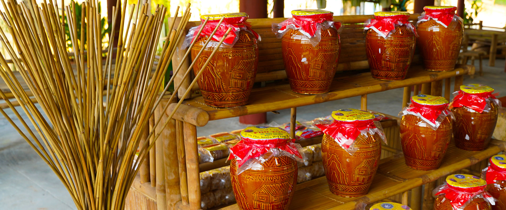

Những món đặc sản hấp dẫn ở Ninh Bình
1. Cơm cháy ruốc

Nhắc đến các món đặc sản Ninh Bình thì món đầu tiên mà người ta thường nghĩ đến chính là
cơm cháy ruốc. Món ăn này thì cũng khá là quen thuộc với mọi người với phần cơm cháy chính
là cơm dính dưới đáy nồi thành tảng được phơi khô dưới nắng xong đó sẽ chiên ngập trong dầu
để có vị giòn nhất định. Đến Ninh Bình, bạn có thể tìm mua cơm cháy ở mọi nơi như Bái Đính,
Tam Cốc, Tràng An…
2. Thịt dê núi
Có lẽ không đâu ở Việt Nam bạn có thể thưởng thức thịt dê ngon và được chế biến thành nhiều
món ăn như ở Ninh Bình. Thịt dê ở đây được nuôi thả, chạy nhảy trên các ngọn núi đá nhiều nên
thịt săn chắc. Các đầu bếp có kinh nghiệm cũng chế biến thịt dê khéo léo để hết mùi đặc trưng.
Thực khách khám phá Ninh Bình sẽ có cơ hội thưởng thức nhiều món làm từ thịt dê như nem dê,
dê hấp, dê nướng, dê tương vừng, lẩu dê… Trong số đó nổi tiếng nhất phải kể đến dê tái chanh.
Thịt dê tươi được chọn có cả thịt và lớp da dày sần sật, thái mỏng, nhúng qua nước sôi cho
chín tái, sau đó bóp với nước cốt chanh, riềng, lá chanh, tỏi, ớt, vừng… Món ăn không thể thiếu
chuối xanh, sả, quả sung và chấm với loại tương bần đặc trưng ở mảnh đất cố đô. Vị thịt ngọt,
quyện với vị chua của chanh, kết hợp với các loại gia vị rất hài hoà, ăn một lần nhớ mãi.
3. Xôi trứng kiến
Nhiều người nhầm tưởng rằng các món ăn làm từ trứng kiến chỉ có ở những vùng núi phía Bắc mà thôi
nhưng thực sự ở Ninh Bình cũng có một món ăn đặc sản làm từ trứng kiến với tên gọi xôi trứng kiến.
Trứng kiến Ninh Bình chủ yếu được khai thác ở vùng núi đá voi Nho Quan, sau khi đưa trứng non về
thì rửa sạch rồi tẩm ướp gia vị và xào chín. Món ăn này kết hợp với xôi, thêm hành khô thì hương vị
phải nói lạ miệng và hấp dẫn vô cùng.
4. Gỏi cá nhệch
Cá nhệch là đặc sản của vùng đồng bằng ven biển Ninh Bình - Thanh Hoá. Người ta có thể chế biến thành
nhiều món ăn như kho, rán, nấu canh chua nhưng chỉ có món gỏi cá nhệch mới có thể lột tả được mùi vị
chân thực nhất của loại đặc sản này. Ngoài Nga Sơn (Thanh Hoá) thì Kim Sơn (Ninh Bình) là nơi nổi tiếng
nhất về món gỏi cá nhệch. Cá nhệch thân dài giống con lươn và cá chình, thường được bắt vào mùa mưa ngâu.
Người ta chọn ra những con cá tươi ngon nhất, sơ chế và tẩm ướp để hết mùi tanh, sau đó ăn sống. Tuy nhiên,
món gỏi không thể thiếu thính được làm bằng gạo nếp rang giã nhỏ. Thính được trộn đều, phủ lên từng miếng cá
thái nhỏ. Món ăn này ăn kèm với nhiều loại gia vị như lá sung, lá ổi, đinh lăng, lá mơ, khế chua, lá vọng cách…
chấm với nước chấm đặc biệt có gừng, tiêu, ớt, sả. Thực khách cũng có thể gói trong bánh tráng, ăn rất ngon,
mùi vị hài hoà, vừa miệng, đặc biệt cảm nhận rõ vị của cá tươi. Trong chuyến khám phá Ninh Bình, bạn có thể
tìm thấy món ăn khá dễ dàng ở các nhà hàng, đặc biệt là ở huyện Kim Sơn.
5. Miến lươn
Miến lươn gia truyền ở Ninh Bình ngon nổi bật, khác biệt với những vùng miền khác bởi nước dùng làm từ
xương lươn, ninh cùng xương ống thật lâu, vớt bọt liên tục để nước giữ được độ trong cũng như vị béo tự nhiên.
Cũng nhờ vậy, khi bát lươn được bưng ra thấy nước dùng màu nâu đậm, đặc sánh vô cùng ngon mắt, đậm miệng.
Thịt lươn lại được rim theo công thức riêng nên khi ăn thấy lươn thơm, béo ngọt mà không hề có mùi tanh. Điểm
khác biệt nữa là miến lươn Ninh Bình còn được ăn kèm với hoa chuối bánh tẻ, thái sợi còn tươi nguyên cùng một
số loại rau khác. Ngoài ra miến cũng cần chọn loại được chế biến từ củ dong ta nguyên chất, không pha tạp, có
sợi nhỏ đều, trong suốt. Miến rong đem rửa sạch trần sơ qua nước sôi, rồi nhúng lại vào nồi nước cho miến nở,
thấm đượm hương thơm vị đậm đà của nước dùng rồi cho vào bát.
6. Rượu cần Nho Quan

Đây là một món đặc sản của người dân tộc Mường ở vùng Nho Quan, được người dân nơi đây nấu rất cẩn thận và tỉ mỉ.
Để làm được rượu cần, người ta sẽ nấu gạo nếp trộn với men được ủ trong những vại lớn. Thời gian ủ nếp là ít nhất
3 tháng. Ai từng uống rượu cần đều biết vị cay ngọt, nồng nồng rất lạ mà nó mang lại. Rượu cần ở Nho Quan sau khi
được làm thủ công sẽ được đóng vào các chai thủy tinh hoặc các vo đất và nút chặt bằng lá chuối đem bán. Bạn có thể
mua vài chua rượu cần Nho Quan về làm quà cho người thân.